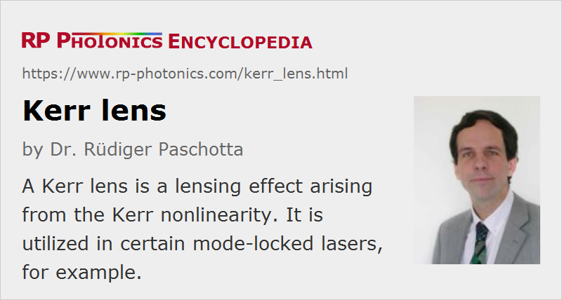

Kerr Lens
Definition: a lensing effect arising from the Kerr nonlinearity
German: Kerr-Linse
Categories: nonlinear optics, physical foundations
How to cite the article; suggest additional literature
Author: Dr. Rüdiger Paschotta
When a short optical pulse propagates through a nonlinear medium, the Kerr effect leads to a phase delay which is largest on the beam axis (where the optical intensity is highest) and smaller outside the axis. This is similar to the action of a lens: the wavefronts are deformed, so that the pulse is focused (assuming a positive nonlinear index n2). This effect is called self-focusing and has important implications for passive mode locking of lasers (→ Kerr lens mode locking) and for optical damage of media (catastrophic self-focusing). For negative n2, the nonlinearity is self-defocusing.
When a Gaussian beam with optical power P and beam radius w propagates through a thin piece (thickness d) of a nonlinear medium with nonlinear index n2, the dioptric power (inverse focal length) of the Kerr lens is
when considering only the phase changes near the beam axis in a parabolic approximation. This equation can be derived by calculating the radially dependent nonlinear phase change and comparing it with that of a lens.
The equation shows that for a given optical power Kerr lensing becomes more important for stronger beam focusing: this increases the optical intensities and even more so the intensity gradients.
Questions and Comments from Users
Here you can submit questions and comments. As far as they get accepted by the author, they will appear above this paragraph together with the author’s answer. The author will decide on acceptance based on certain criteria. Essentially, the issue must be of sufficiently broad interest.
Please do not enter personal data here; we would otherwise delete it soon. (See also our privacy declaration.) If you wish to receive personal feedback or consultancy from the author, please contact him e.g. via e-mail.
By submitting the information, you give your consent to the potential publication of your inputs on our website according to our rules. (If you later retract your consent, we will delete those inputs.) As your inputs are first reviewed by the author, they may be published with some delay.
Bibliography
| [1] | P. A. Belanger and C. Pare, “Self-focusing of Gaussian beams: an alternate derivation”, Appl. Opt. 22 (9), 1293 (1983), doi:10.1364/AO.22.001293 |
| [2] | F. Salin et al., “Modelocking of Ti:sapphire lasers and self-focusing: a Gaussian approximation”, Opt. Lett. 16 (21), 1674 (1991), doi:10.1364/OL.16.001674 |
| [3] | V. Magni et al., “Astigmatism in Gaussian-beam self-focusing and in resonators for Kerr-lens mode locking”, J. Opt. Soc. Am. B 12 (3), 476 (1995), doi:10.1364/JOSAB.12.000476 |
| [4] | J. H. Marburger, “Self-focusing: theory”, in Progress in Quantum Electronics, J. H. Sanders and S. Stenholm, eds. (Pergamon, Oxford, 1977), Vol. 4, pp. 35-110 (1977) |
| [5] | Y. R. Shen, “Self-focusing: experimental”, in Progress in Quantum Electronics, J. H. Sanders and S. Stenholm, eds. (Pergamon, Oxford, 1977), Vol. 4, pp. 1-34 (1977) |
See also: dioptric power, focal length, Kerr effect, lenses, self-focusing, laser-induced damage, Kerr lens mode locking, self-phase modulation
and other articles in the categories nonlinear optics, physical foundations
|  |
If you like this page, please share the link with your friends and colleagues, e.g. via social media: 


These sharing buttons are implemented in a privacy-friendly way! |
2020-06-30
Regarding the formula above there is a difference by a factor of 2 between the printed book and the online Encyclopedia. Which formula is correct?
Answer from the author:
The formula here is correct. Sorry for the mistake in the printed book.